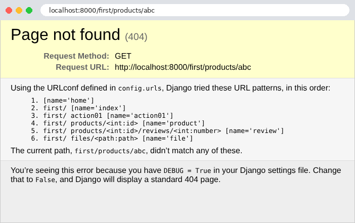
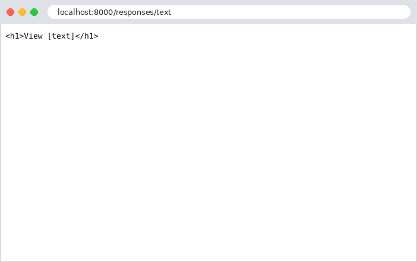
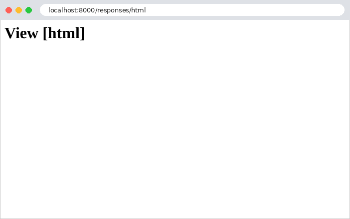
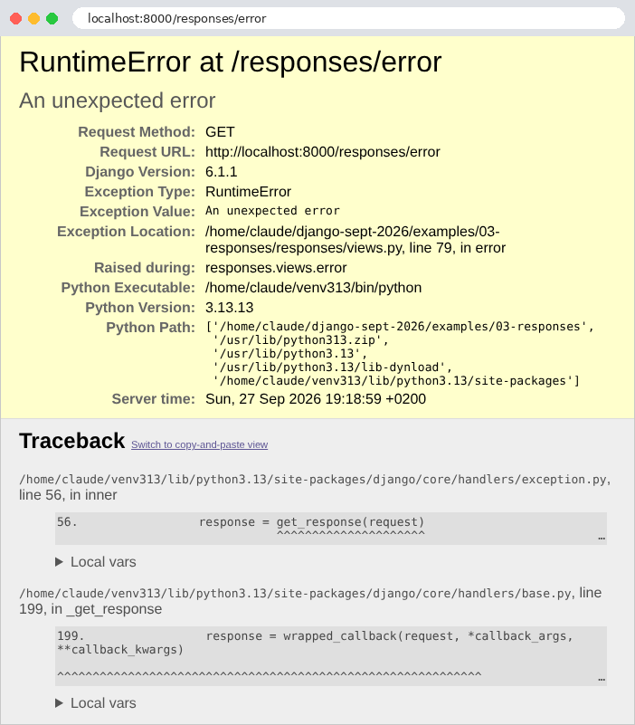
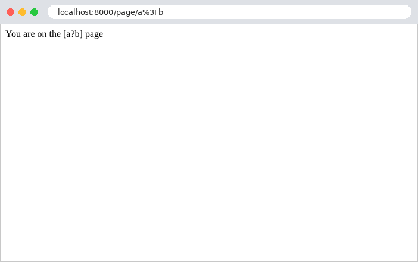

2. Views, Routing, Antworten
Dieses Kapitel untersucht den Weg einer Anfrage vom Browser bis zu der View, die sie verarbeitet, sowie die Antwort, die diese View zurückgibt. Templates werden erst in Kapitel 3 eingeführt: Hier geben die Views direkt Text oder JSON zurück.
2.1. Beispiel 01: Die Struktur einer Django-Anwendung
Das erste Beispiel ist die kleinstmögliche [Django]-Anwendung. Ein mit [django-admin startproject] erstelltes Projekt enthält sechs Dateien, und eine mit [python manage.py startapp] erstellte Anwendung enthält sieben weitere (siehe Einführung); hier behalten wir nur diejenigen, ohne die die Anwendung nicht auskommt:
- [manage.py]: das Kommandozeilenwerkzeug des Projekts. Damit starten Sie den Entwicklungsserver und führen viele weitere Befehle aus;
- [config]: ein [Python]-Paket, d. h. ein Ordner, der [Python]-Module (Dateien [.py]) und eine Datei [__init__.py] enthält. Um ein Modul aus einem Paket zu importieren, schreiben Sie [config.settings] (die Datei [config/settings.py]);
- [config/settings.py]: die Einstellungen der Anwendung;
- [config/urls.py]: die Routen der Anwendung und, in diesem ersten Beispiel, ihre einzige View;
- [config/wsgi.py]: der Einstiegspunkt der Anwendung für einen Webserver;
- [config/__init__.py]: die Datei, die den Ordner [config] zu einem Paket macht. Sie ist oft leer; unsere enthält nur einen Kommentar.
2.1.1. Der Einstiegspunkt: config/wsgi.py
[Python] hat einen Standard für Webanwendungen: WSGI (Web Server Gateway Interface, ausgesprochen „whiskey“). Er legt fest, wie ein Webserver eine Anfrage an eine [Python]-Anwendung weiterleitet und wie er die Antwort erhält. Alle [Python]-Webserver ([gunicorn], [waitress], [uWSGI], der [Django]-Entwicklungsserver ...) können eine WSGI-Anwendung aufrufen, und alle [Python]-Web-Frameworks ([Django], [Flask] ...) erzeugen eine. Die Datei [config/wsgi.py] erzeugt die WSGI-Anwendung für unser Projekt:
- Zeile 1: ein Kommentar, von [#] bis zum Zeilenende. Alle Beispieldateien beginnen mit einem Kommentar, der ihren Namen und Zweck angibt;
- Zeile 3: Die Anweisung [import] importiert ein Modul, hier [os], ein Modul der Standardbibliothek von [Python], das Zugriff auf das Betriebssystem und insbesondere auf die Umgebungsvariablen des Prozesses bietet ([os.environ]);
- Zeile 5: [from ... import ...] importiert einen Namen aus einem Modul: die Funktion [get_wsgi_application] aus dem Modul [django.core.wsgi]. Der vollständige Name eines Moduls gibt seinen Speicherort an: [django.core.wsgi] ist die Datei [wsgi.py] im Ordner [core] des Pakets [django], das in der virtuellen Umgebung installiert ist (siehe Einführung). Nach diesem Import kann die Funktion einfach [get_wsgi_application] genannt werden;
- Zeile 8: [Django] bezieht seine Einstellungen über die Umgebungsvariable [DJANGO_SETTINGS_MODULE], die den Namen des Konfigurationsmoduls enthält: [config.settings]. [os.environ] verhält sich wie ein Dictionary; seine Methode [setdefault] weist ihr einen Wert zu, sofern sie nicht bereits einen hat: Eine echte Umgebungsvariable, die vor dem Start des Servers gesetzt wurde, hat Vorrang;
- Zeile 11: [get_wsgi_application()] bereitet [Django] vor: Es liest die Einstellungen, richtet die Protokollierung ein, lädt die Anwendungen des Projekts (Beispiel 02) und gibt dann die WSGI-Anwendung zurück, die in der Variablen [application] gespeichert wird. Genau diese Variable sucht der Webserver in der Datei. In [Python] wird eine Variable nicht deklariert: Sie wird bei der ersten Zuweisung erzeugt und kann Werte beliebigen Typs enthalten.
Die WSGI-Anwendung ist ein Objekt, das der Server für jede empfangene Anfrage mit den Anfragedetails aufruft; das Objekt gibt die Antwort zurück. Die gesamte Anwendung ist also eine Funktion, die eine Anfrage in eine Antwort umwandelt. Dazwischen erzeugt [Django] ein Anfrageobjekt ([HttpRequest]), findet die für die Verarbeitung zuständige View (Routing), ruft sie auf und erhält das von ihr erzeugte Antwortobjekt ([HttpResponse]), das es dann an den Server übergibt.
Diese Datei wird nur einmal ausgeführt, beim Start des Servers. Das ist der wesentliche Unterschied zu [PHP], den Leser des Kurses [Symfony] bereits in Aktion gesehen haben: In [PHP] wird die Anwendung bei jeder Anfrage neu aufgebaut und anschließend verworfen; in [Python] wird sie einmal beim Start aufgebaut und bleibt dann im Speicher, um alle folgenden Anfragen zu verarbeiten. Die Konfiguration, die Routing-Tabelle, die importierten Module und die in Modulvariablen gespeicherten Objekte – all das wird einmal aufgebaut und von allen Anfragen gemeinsam genutzt. Das ist schnell, erfordert aber Vorsicht: Von einer Anfrage geänderte Daten sind für nachfolgende Anfragen sichtbar, und wenn der Server mehrere Anfragen gleichzeitig verarbeitet (der Entwicklungsserver tut dies mit einem Thread pro Anfrage), können zwei Anfragen dieselben Daten gleichzeitig ändern. Wir kommen darauf in Beispiel 06 und vor allem im Kapitel über Datenbereiche zurück.
[Python] hat einen zweiten, neueren Standard: ASGI (Asynchronous Server Gateway Interface) für asynchrone Anwendungen (etwa WebSockets). [Django] kann beide erzeugen; die von [asgi.py] erstellte Datei [django-admin startproject] erzeugt die ASGI-Anwendung. Wir bleiben bei WSGI.
2.1.2. Die Konfiguration: config/settings.py
Die Einstellungen von [Django] sind Variablen des Moduls [config.settings], in Großbuchstaben geschrieben. Es ist eine gewöhnliche [Python]-Datei: Sie können darin Werte berechnen, Umgebungsvariablen lesen und andere Module importieren. [Django] verlangt nur wenige Einstellungen; alle anderen haben einen Standardwert, der im Modul [django.conf.global_settings] von [Django] definiert ist (mehr als 150 Einstellungen). Der Befehl [python manage.py diffsettings] zeigt die Einstellungen an, die von ihren Standardwerten abweichen:
- Zeile 3: [pathlib] ist das Modul der Standardbibliothek, das Dateipfade verarbeitet. Ein Objekt [Path] stellt einen Pfad dar; er wird unter [Windows] und andernorts gleich geschrieben;
- Zeile 6: der Projektordner. [__file__] ist der Pfad der aktuellen Datei ([config/settings.py]); [resolve()] macht ihn absolut; [.parent] bezeichnet den Ordner, der sie enthält ([config]), und [.parent.parent] den darüberliegenden Ordner: den Ordner [01-structure]. Diese Einstellung, [BASE_DIR], ist keine Einstellung von [Django]: Sie ist eine Hilfsvariable, die andere Einstellungen verwenden, um auf Projektordner zu verweisen ([BASE_DIR / "templates"], Beispiel 13: Der Operator [/] verbindet zwei Pfadsegmente);
- Zeile 10: der Debug-Modus. Ist er auf [True] gesetzt, zeigt eine unbehandelte Ausnahme eine detaillierte Fehlerseite an (Beispiel 03), und der Entwicklungsserver liefert die statischen Dateien selbst aus (Beispiel 15). Dieser Modus ist ausschließlich für die Entwicklung gedacht: Die Fehlerseite gibt den Quellcode und die Konfiguration der Anwendung preis;
- Zeile 13: der geheime Schlüssel der Anwendung: eine zufällige Zeichenfolge, mit der [Django] bestimmte Daten signiert (signierte Cookies, Anti-CSRF-Token, Links zum Zurücksetzen von Passwörtern usw.). Diese Einstellung ist erforderlich: Ohne sie weigert sich [Django] zu starten. Jedes Beispiel hat seinen eigenen. Das Präfix [django-insecure-] wird von [django-admin startproject] verwendet: Es erinnert daran, dass dieser im Quellcode fest eingetragene Schlüssel nicht in der Produktion verwendet werden darf, wo der Schlüssel über eine Umgebungsvariable bereitgestellt wird (Fallstudie);
- Zeile 17: die Hostnamen, die die Anwendung bedienen soll (der Header [Host] der Anfrage). Dies ist eine Schutzmaßnahme gegen Anfragen, die die Zielsite falsch angeben. Im Debug-Modus entspricht eine leere Liste [localhost], [127.0.0.1] und [::1]; außerhalb des Debug-Modus muss sie gefüllt sein – andernfalls weigert sich [python manage.py runserver] zu starten. In [Python] ist [[a, b]] eine Liste;
- Zeilen 20–21: die Sprache der Anwendung ([en]: Datumsangaben, Zahlen und Meldungen von [Django] sind englisch; siehe Beispiel 06) und ihre Zeitzone. Zeichenfolgen können in doppelte oder einfache Anführungszeichen gesetzt werden; die Beispiele verwenden doppelte;
- Zeile 24: das Modul, das die Routen der Anwendung enthält: [config.urls], also die Datei [config/urls.py];
- Zeile 27: die WSGI-Anwendung, angegeben durch ihren vollständigen Pfad: die Variable [application] des Moduls [config.wsgi]. Diese wird vom Entwicklungsserver gestartet.
2.1.3. Routen und View: config/urls.py
- Zeilen 3–4: Import der Klasse [HttpResponse], der HTTP-Antwort, und der Funktion [path], die eine Route deklariert;
- Zeilen 9–11: eine View – eine Funktion, die die Anfrage erhält und die Antwort zurückgibt. [def] definiert eine Funktion; ihr Rumpf ist der eingerückte Block nach dem Doppelpunkt. In [Python] ist die Einrückung nicht nur eine Frage der Formatierung: Sie begrenzt die Blöcke (während [PHP] und [Java] geschweifte Klammern verwenden). Der Parameter [request] erhält die Anfrage, ein Objekt [HttpRequest], das [Django] einer View stets als Erstes übergibt (Beispiel 05); es ist eine Konvention von [Django] , ihn [request] zu nennen;
- Zeile 11: Die View gibt ein Objekt [HttpResponse] zurück, dessen erster Parameter der Rumpf der Antwort ist. In [Python] wird ein Objekt erzeugt, indem man seine Klasse wie eine Funktion aufruft, ohne das Schlüsselwort [new]. Das ist die Regel bei [Django]: Eine View gibt immer ein Objekt [HttpResponse] zurück (Beispiel 03);
- Zeilen 15–17: die Routing-Tabelle. [Django] sucht im Modul [ROOT_URLCONF] nach einer Variablen namens [urlpatterns]: einer Liste von Routen. Die Route [path("", home)] ordnet den leeren Pfad (die Wurzel der Site, [/]) der View [home] zu. Beachten Sie, dass der Pfad einer Route ohne den führenden Schrägstrich geschrieben wird: [Django] entfernt ihn vom angeforderten Pfad, bevor es ihn mit den Routen vergleicht. Beachten Sie außerdem, dass die Funktion selbst ([home], ohne Klammern) an [path] übergeben wird, nicht ihr Ergebnis: In [Python] ist eine Funktion ein Objekt wie jedes andere, das in einer Variablen gespeichert oder an eine andere Funktion übergeben werden kann. [Django] ruft sie später für jede Anfrage [/] auf. Ein Komma nach dem letzten Element der Liste ist erlaubt und gängige Praxis, wenn die Elemente einzeln pro Zeile geschrieben werden.
In einem echten Projekt werden Views nie in der Routendatei geschrieben: Sie gehören in die Dateien [views.py] der Anwendung (Beispiel 02). Hier haben wir es so gemacht, um das Beispiel einfach zu halten.
2.1.4. Das Werkzeug manage.py
Die Datei [manage.py] ist ein [Python]-Skript, das [Django] ebenso vorbereitet wie [config/wsgi.py], jedoch um einen Befehl auszuführen, statt Anfragen zu verarbeiten:
- Zeile 1: Unter [Linux] und [macOS] erlaubt diese Zeile, die Datei direkt auszuführen ([./manage.py]); unter [Windows] geben Sie stets [python manage.py] ein;
- Zeile 10: das Konfigurationsmodul, wie in [config/wsgi.py];
- Zeilen 12–13: Ein Import kann auch innerhalb einer Funktion erfolgen. [execute_from_command_line] führt den angeforderten Befehl aus: [sys.argv] ist die Liste der Kommandozeilenparameter ([["manage.py", "runserver"]]);
- Zeilen 16–17: [__name__] ist gleich ["__main__"] , wenn die Datei direkt ausgeführt wird ([python manage.py]), und gleich dem Namen des Moduls, wenn sie importiert wird. Diese Bedingung, die sich in vielen [Python]-Skripten findet, ruft die Funktion [main] nur im ersten Fall auf.
[python manage.py help] zeigt die Liste der verfügbaren Befehle an: in diesem Beispiel fünfundzwanzig, und mehr, wenn Funktionen von [Django] hinzugefügt werden (statische Dateien, Sessions, Authentifizierung usw.). Wir werden mehrere davon verwenden: [runserver], [check] (Projektprüfung), [shell] (eine [Python]-Konsole, in der [Django] bereitsteht), [makemessages] und [compilemessages] (Übersetzungen, Beispiel 22), [collectstatic] (statische Dateien, Fallstudie; die Anwendung [django.contrib.staticfiles] fügt ihn hinzu). [django-admin] (siehe Anhänge) ist dasselbe Werkzeug, weiß aber nicht, wo sich die Projektkonfiguration befindet.
2.1.5. Ausführung
Geben Sie in einem im Ordner [01-structure] geöffneten Terminalfenster, in dem die virtuelle Umgebung der Beispiele aktiviert wurde (siehe Einführung), [python manage.py runserver] ein. [Django] zeigt an:
Der Befehl [runserver] startet den in [Django] integrierten Entwicklungsserver. Er führt zunächst Systemprüfungen des Projekts durch: Fehlende oder inkonsistente Einstellungen oder falsch geschriebene Routen führen hier zu Fehlern oder Warnungen, noch bevor Anfragen eintreffen. Anschließend lauscht er auf Port 8000 des Rechners selbst ([127.0.0.1], [localhost]): Er akzeptiert nur Anfragen von diesem Rechner, was für die Entwicklung angemessen ist ([python manage.py runserver 0.0.0.0:8000] würde ihn für andere Rechner im Netzwerk öffnen). Er wird mit [Ctrl-C] beendet. Dieser Server ist für die Entwicklung gedacht, wie seine Warnung besagt: In der Produktion wird es ein WSGI-Server wie [gunicorn] oder [waitress] sein (siehe Fallstudie).
Die erste Zeile zeigt an, dass der Server die Projektdateien überwacht ([StatReloader]: Er vergleicht regelmäßig deren Änderungsdaten). Da die Anwendung im Speicher bleibt, würde die laufende Anwendung die Änderung einer Datei wie [Python] nicht bemerken; deshalb startet der Entwicklungsserver automatisch neu, sobald sich eine Datei ändert. Ein manueller Neustart ist nicht notwendig, außer nach dem Hinzufügen einer neuen Datei, die noch von niemandem importiert wird.
Rufen wir die URL [http://localhost:8000/] mit einem Browser auf:

und dann mit [curl]. Die Option [-i] zeigt auch die HTTP-Header der Antwort an:
Die erste Zeile der Antwort enthält die Protokollversion, den Statuscode (200) und seine Bezeichnung ([OK]). Es folgen die Header: das Datum, der Server (der WSGI-Server der [Python]-Standardbibliothek, auf dem der Entwicklungsserver aufbaut), der Inhaltstyp und [Connection: close] (der Entwicklungsserver schließt die Verbindung nach jeder Antwort). Eine Leerzeile trennt die Header vom Rumpf der Antwort. Im weiteren Verlauf dieses Dokuments geben wir die Header [Date], [Server] und [Connection] nicht mehr an, da sie sich nicht ändern.
Der Header [Content-Type: text/html; charset=utf-8] zeigt an, dass die Antwort HTML ist, dessen Zeichen in UTF-8 kodiert sind. Das ist die Wahl von [Django] für eine Antwort, deren View keinen Typ angegeben hat: Der Browser interpretiert die Zeichenfolge daher als HTML (hier wird sie ohne Tag unverändert angezeigt). Beispiel 03 zeigt, wie ein anderer Typ angegeben wird. Die Antwort ist minimal: kein Header [Content-Length], keine Cookies und keine Sicherheits-Header. Diese werden von der Middleware von [Django] hinzugefügt (Beispiel 03), und unsere Anwendung hat keine.
Für jede Anfrage zeigt die Serverkonsole einen Protokolleintrag an: das Datum, die Anfragedetails (Methode, Pfad, Protokoll), den Antwortcode und die Größe des Antwortrumpfs in Bytes:
Ändern wir den Text in Zeile 11 von [config/urls.py] und speichern die Datei: Die Konsole zeigt [.../01-structure/config/urls.py changed, reloading.] an, gefolgt von den Startzeilen. Die nächste Anfrage erhält den neuen Text.
2.2. Beispiel 02: Routing
Das Routing ordnet eine URL einer View zu. Alle Views direkt in die Routing-Datei zu schreiben, würde schnell unübersichtlich; stattdessen werden sie in Anwendungen organisiert. Eine [Django]-Anwendung ist ein [Python]-Paket, das alles zu einem einzelnen Bereich zusammenfasst: seine Views, seine Routen und später seine Templates, Formulare und Models. Ein Projekt ist eine Sammlung von Anwendungen. Beispiel 02 hat zwei:
Die Dateien [manage.py], [config/__init__.py], und [config/wsgi.py] sind die aus Beispiel 01: Wir erwähnen sie nicht mehr. Die Datei [config/settings.py] beginnt stets mit denselben Einstellungen (nur der Name des Beispiels und der geheime Schlüssel ändern sich); wir kommentieren nur die Einstellungen, die jedes Beispiel hinzufügt. Hier die Liste der Anwendungen:
- Zeilen 17–20: Die Einstellung [INSTALLED_APPS] listet die Anwendungen des Projekts auf, identifiziert durch ihre Paketnamen. [Django] lädt sie beim Start in dieser Reihenfolge. Für unser Beispiel ist die Deklaration nicht zwingend: Die Views für [home] und [first] werden über Importe aus den Routendateien gefunden. Sie wird unverzichtbar, sobald die Anwendungen Templates (Beispiel 13), Template-Tags (Beispiel 16), Übersetzungen (Beispiel 22) oder ORM-Models (Beispiel 28) enthalten – diese sucht [Django] nur in deklarierten Anwendungen. [Django] selbst stellt mehrere Anwendungen bereit ([django.contrib.sessions], [django.contrib.messages], [django.contrib.staticfiles], [django.contrib.admin] ...), die auf dieselbe Weise deklariert werden.
2.2.1. Die View der Anwendung home
- Zeile 4: Import eines Dekorators aus [Django];
- Zeilen 9–10: Ein Dekorator ist eine Funktion, die eine andere Funktion umschließt, um deren Verhalten zu ändern. Er wird als [@name] oberhalb der Funktionsdefinition geschrieben: [@require_GET] oberhalb von [def index] ist gleichbedeutend damit, nach der Definition [index = require_GET(index)] zu schreiben. Die Funktion [index] wird durch eine Funktion ersetzt, die zuerst die HTTP-Methode der Anfrage prüft: Ist sie nicht GET, antwortet sie selbst mit einem Fehler 405, ohne [index] aufzurufen. Ohne Dekorator akzeptiert eine View alle Methoden. Das Modul [django.views.decorators.http] enthält außerdem [require_POST], [require_safe] (GET und HEAD) und [require_http_methods(["GET", "POST"])]. Beachten Sie, dass [require_GET] Anfragen bis einschließlich der Methode HEAD ablehnt (dieselbe Anfrage wie GET, jedoch ohne Antwortrumpf): [require_safe] ist erforderlich, um sie zu akzeptieren. Nach Konvention wird der Name einer Funktion oder Variablen in [Python] in Kleinbuchstaben geschrieben, wobei die Wörter durch Unterstriche getrennt werden ([require_GET] ist eine Ausnahme), während ein Klassenname zu Beginn jedes Wortes einen Großbuchstaben hat ([HttpResponse]);
- Zeilen 11–22: eine mehrzeilige Zeichenfolge, begrenzt durch drei Anführungszeichen (["""]). Die View gibt HTML zurück, gesendet mit dem Typ [text/html] (siehe Beispiel 01).
Die View [index] gibt somit eine HTML-Seite zurück, die Links auf Views der anderen Anwendung enthält:

2.2.2. Die Views der Anwendung first
- Zeilen 9–11: eine View als Funktion, wie in Beispiel 01;
- Zeilen 16–21: Eine View kann auch eine Klasse sein, die von der Klasse [View] von [Django] erbt. In [Python] wird die Vererbung geschrieben, indem man die Elternklasse in Klammern hinter den Klassennamen setzt. Die Klasse hat für jede HTTP-Methode, die sie implementiert, eine Methode, benannt nach der HTTP-Methode in Kleinbuchstaben: [get] für GET, [post] für POST. [Django] ruft die Methode auf, die der Anfrage entspricht; eine HTTP-Methode, die von keiner Methode der Klasse behandelt wird, führt zu einem Fehler 405. Eine [Python]-Methode erhält als ersten Parameter stets das Objekt, auf dem sie aufgerufen wird – üblicherweise [self] genannt –, gefolgt von der Anfrage. Das ist der klarste Weg, mehrere HTTP-Methoden auf derselben URL zu behandeln (eine Funktion müsste [request.method] selbst prüfen; siehe Beispiel 11). [Django] bietet außerdem generische Views – fertige Klassen für häufige Anforderungen ([TemplateView], [ListView], [FormView] ...), die dieses Dokument nicht verwendet: Sie verbergen genau das, was wir zeigen möchten;
- Zeilen 26–28: eine View, die nach der Anfrage einen Routenparameter erhält, [id]. Der Wert ist bereits in eine Ganzzahl konvertiert (siehe unten). Die Zeichenfolge [f"Product no. {id}"] ist ein f-String: In geschweiften Klammern geschriebene Ausdrücke werden durch ihre Werte ersetzt;
- Zeilen 32–34: zwei Routenparameter. [Django] übergibt sie der View nach Namen (benannte Parameter): Die Reihenfolge der Parameter der View spielt keine Rolle. Hier steht [number] vor [id];
- Zeilen 38–40: ein Routenparameter, der Schrägstriche enthält.
2.2.3. Die Routen: config/urls.py und first/urls.py
Die URL-Pfade müssen noch den Views zugeordnet werden. Die Haupt-Routing-Tabelle für die Einstellung [ROOT_URLCONF]:
- Zeile 5: Import des Moduls [views] aus der Anwendung [home] unter einem anderen Namen: [as home_views]. Zwei Anwendungen können jeweils ein Modul namens [views] haben; die Umbenennung verhindert Verwechslungen;
- Zeile 9: der Pfad zur Wurzel der Site. Der dritte Parameter, [name], benennt die Route: Dieser Name dient dazu, ihre URL zu erzeugen (Beispiel 04), ohne sie fest einzutragen. [Python] akzeptiert Parameter nach Position oder nach Name ([name="home"]): Benannte Parameter machen den Aufruf lesbarer;
- Zeile 12: [include] delegiert einen Teil der URL-Pfade an eine andere Routing-Tabelle: Alle URL-Pfade, die mit [first/] beginnen, werden den Routen des Moduls [first.urls] zugewiesen, an das [Django] nur das Ende des Pfads übergibt. Jede Anwendung behält so ihre Routen in einer eigenen Datei [urls.py], und das Projekt entscheidet nur, unter welchem Präfix sie eingehängt werden. Das Präfix endet mit einem Schrägstrich: Das ist die Konvention von [Django], bei der Routen von Anwendungen nie mit einem Schrägstrich beginnen.
- Zeile 10: [app_name] legt einen Namensraum für die Routen der Datei fest: Für den Rest des Projekts heißt die Route namens [product] dann [first:product]. Zwei Anwendungen können so jeweils eine Route namens [index] ohne Konflikt haben;
- Zeile 14: Der Pfad [""] bezeichnet das Präfix selbst: die URL [/first/];
- Zeile 17: die als Klasse geschriebene View. [as_view()] ist eine Methode der Klasse [View], die die Funktion erzeugt, die [Django] für jede Anfrage aufruft: Diese Funktion erzeugt ein Objekt [Action01] und ruft dann je nach HTTP-Methode der Anfrage dessen Methode [get] oder [post] auf. Für jede Anfrage wird ein neues Objekt erzeugt;
- Zeile 20: [<int:id>] ist ein Routenparameter: Dieses URL-Segment kann verschiedene Werte annehmen. [id] ist der Name des Parameters, der an die View übergeben wird; [int] ist ein Konverter, der nur Ziffern akzeptiert und der View eine Ganzzahl übergibt: Für die URL [/first/products/17] ist der Parameter [id] der View die Ganzzahl 17. Besteht das Segment nicht aus Ziffern, passt die Route nicht. Das ist das Data Binding, das das nächste Kapitel ausführlich behandelt;
- Zeile 22: zwei Routenparameter;
- Zeile 25: Der Konverter [path] akzeptiert jedes Pfadende, einschließlich Schrägstrichen. [Django] kennt fünf Konverter: [str] (der Standardkonverter: [<name>] entspricht [<str:name>]; jeder nicht leere Text ohne Schrägstrich), [int] (Zahlen), [slug] (Buchstaben, Ziffern, Bindestriche und Unterstriche, wie in [my-article-01]), [uuid] (ein UUID-Bezeichner) und [path]. Beispiel 12 zeigt, wie man einen „benutzerdefinierten“ Konverter schreibt, und Beispiel 22 die Funktion [re_path], die eine Route mit einem regulären Ausdruck beschreibt.
Für jede Anfrage durchläuft [Django] die Routen der Reihe nach und hält bei der ersten an, die zum angeforderten Pfad passt: Die Reihenfolge der Routen ist wichtig, wenn zwei Routen auf denselben Pfad passen können.
2.2.4. Ausführung
Hier sind die Antworten auf einige Anfragen:
Um eine POST-Anfrage zu senden, verwenden Sie die Option [-X POST] von [curl]:
Die POST-Anfrage wird unverändert akzeptiert. Das ist nicht mehr der Fall, sobald die Anwendung die Anti-CSRF-Middleware von [Django] besitzt (Beispiel 18), die jede POST-Anfrage ablehnt, die nicht nachweist, aus einem Formular der Anwendung zu stammen. Eine HTTP-Methode, die die View nicht behandelt, führt zu einem Fehler 405 ([Method Not Allowed]). Der Header [Allow] gibt die akzeptierten Methoden an:
Die Antwort hat keinen Rumpf. Die Klasse [View] akzeptiert zusätzlich zu den Methoden der Klasse die Methode HEAD (von der Methode [get] behandelt) und die Methode OPTIONS (die die Liste der akzeptierten Methoden zurückgibt). Die Serverkonsole meldet die Ablehnung:
Der Dekorator [@require_GET] erzeugt denselben Fehler:
Eine URL, die keine Route behandelt, führt zu einem Fehler 404. Das gilt auch für eine Kennung, die keine Zahl ist: Der Konverter [int] verhindert, dass die Route auf [/first/products/abc] passt.
In einem Browser im Debug-Modus:

Die Fehlerseite von [Django] erklärt, dass keine Route zum angeforderten Pfad passt, und listet der Reihe nach alle Routen der Anwendung mit ihren Namen auf: Das ist eine gute Möglichkeit, Ihre Routen zu überprüfen ([Django] besitzt keinen Befehl, der sie auflistet). Beachten Sie, dass die Routen der [first]-Anwendung tatsächlich mit [first/] präfixiert wurden und dass der Pfad ohne seinen führenden Schrägstrich verglichen wurde. Kapitel 6 zeigt, wie Sie diese Seite durch eine eigene Seite der Anwendung ersetzen. Beachten Sie außerdem, dass [Django] zwischen [/first/] und [/first] unterscheidet: Die zweite URL hat keine Route und liefert einen 404-Fehler. Eine Middleware-Komponente von [Django], [CommonMiddleware] (Fallstudie), löst dieses Problem: Wenn ein Pfad ohne abschließenden Schrägstrich keine Route hat, derselbe Pfad mit abschließendem Schrägstrich jedoch schon, leitet sie den Browser (Beispiel 04) auf diesen zweiten Pfad um (das ist die Einstellung [APPEND_SLASH], die standardmäßig aktiviert ist).
2.3. Beispiel 03: Antworten einer View
Was eine View zurückgibt, bestimmt die HTTP-Antwort. Beispiel 03 geht die wichtigsten Fälle durch:
Die Anwendung [responses], eingebunden unter dem Präfix [responses/] durch die Datei [config/urls.py], ordnet jeder URL [/responses/xxx] eine View zu:
Kommentieren wir diesen Code:
- Zeile 5: die Antwort- und Ausnahmeklassen des Moduls [django.http];
- Zeile 8: Import einer Klasse aus einem Modul derselben Anwendung. Der Punkt in [.viewmodels] bezeichnet das Paket der aktuellen Datei ([responses]): Das ist ein relativer Import;
- Zeilen 12–14: [HttpResponse] akzeptiert benannte Parameter: [content_type] gibt hier reinen Text an ([text/plain]); der Browser interpretiert die Tags nicht. [status] (der Statuscode, standardmäßig 200) und [headers] (ein Dictionary der Header) sind die übrigen;
- Zeilen 18–20: dieselbe Zeichenkette ohne deklarierten Typ: [Django] sendet sie mit dem Typ [text/html], und der Browser interpretiert sie;
- Zeilen 26–28: [JsonResponse] ist eine Kindklasse von [HttpResponse]: Sie wandelt ihren ersten Parameter in JSON um und deklariert den Typ [application/json]. Die Umwandlung übernimmt das Modul [json] der Standardbibliothek, das nur die Basistypen von [Python] kennt: Dictionaries, Listen, Zeichenketten, Zahlen, Wahrheitswerte und [None]. Ein Objekt muss daher zunächst in ein Dictionary umgewandelt werden: Das erledigt die Funktion [asdict] (Zeile 3) für eine Datenklasse wie [Person], die weiter unten gezeigt wird. Die View heißt [as_json]: Hieße sie [json], würde sie in dieser Datei das Modul [json] verdecken, falls es importiert würde;
- Zeilen 32–34: Ein Dictionary namens [Python], in geschweifte Klammern eingeschlossen, wird zu einem JSON-Objekt;
- Zeilen 39–41: Eine Liste wird zu einem JSON-Array. Standardmäßig akzeptiert [JsonResponse] nur ein Dictionary: Das ist eine alte Schutzmaßnahme gegen eine Sicherheitslücke in älteren Browsern, die es einer Drittseite erlaubte, ein JSON-Array zu lesen. Der Parameter [safe=False] hebt diese Einschränkung auf;
- Zeilen 45–49: eine berechnete Liste. Die Methode [sort] sortiert die Liste (sie verändert die Liste selbst). [[n * 10 for n in numbers]] ist eine List Comprehension: die Liste der Werte [n * 10] für jedes Element [n] der Liste [numbers];
- Zeilen 53–55: der Parameter [status]: 201 ([Created]) ersetzt 200;
- Zeilen 59–61: Der Code 204 ([No Content]) bedeutet „nichts anzuzeigen“: Die Antwort hat keinen Body;
- Zeilen 65–67: ein „erwarteter“ Fehler: eine 404-Antwort ([Not Found]) mit einem von der View gewählten Body (JSON);
- Zeilen 71–73: derselbe Fehler, ausgelöst durch eine Ausnahme. [Http404] ist eine Ausnahme von [Django]; die Anweisung [raise] löst sie aus und beendet damit die View. [Django] wandelt sie in eine 404-Fehlerantwort um. Das ist die gebräuchlichste Art, eine View wegen eines Fehlers zu beenden, selbst tief innerhalb einer von der View aufgerufenen Funktion. Das Modul [django.shortcuts] stellt zwei Abkürzungen bereit, die sie auslösen: [get_object_or_404] und [get_list_or_404] (für die ORM-Modelle, Kapitel 7). [django.core.exceptions] definiert die Ausnahmen, die die übrigen Fehlercodes erzeugen: [PermissionDenied] (403), [BadRequest] (400), [SuspiciousOperation] (400);
- Zeilen 77–79: Ein „unerwarteter“ Fehler – eine Ausnahme, die niemand behandelt – führt zu einer 500-Antwort ([Internal Server Error]). [RuntimeError] ist eine Ausnahmeklasse aus der Standardbibliothek von [Python], die ohne Import verfügbar ist;
- Zeilen 84–86: der Fehler, den es zu vermeiden gilt. Eine [Django]-View muss ein [HttpResponse]-Objekt zurückgeben; diese View erzeugt die Antwort zwar erfolgreich, gibt sie aber nicht zurück. Eine [Python]-Funktion ohne [return] gibt den Wert [None] zurück, den [Django] ablehnt (die Antwort darauf sehen wir weiter unten). Das unterscheidet sich von anderen Frameworks wie [Flask], die ein Dictionary oder eine Zeichenkette selbst in eine Antwort umwandeln: [Django] verlangt, dass die View ausdrücklich angibt, welche Antwort sie zurückgibt.
Die Klasse [Person]:
- Zeile 3: das Modul [dataclasses] aus der Standardbibliothek;
- Zeilen 9–13: eine Datenklasse. Die Zeilen [last_name: str] deklarieren Attribute samt ihren Typen (Typannotationen, die [Python] zur Laufzeit nicht erzwingt, die der Code-Editor aber prüft). Der Dekorator [@dataclass] erzeugt aus diesen Attributen den Konstruktor der Klasse (die Methode [__init__], aufgerufen durch [Person("Martin", "Jean", 42)]), ihre Vergleichsmethode ([==]) und ihre Textdarstellung ([Person(last_name='Martin', first_name='Jean', age=42)]). Mit [frozen=True] können die Attribute nach der Konstruktion nicht mehr verändert werden: Ein [Person]-Objekt ist unveränderlich. Es besteht keine Pflicht, diese Klasse in einem Modul [viewmodels.py] abzulegen: Das ist eine Entscheidung dieses Dokuments, das den Namen [models.py] den ORM-Modellen von [Django] vorbehält (Kapitel 7).
Bleibt noch die Datei [config/middleware.py]:
Standardmäßig enthält eine Antwort vom Typ [JsonResponse] kompaktes, einzeiliges JSON, in dem Nicht-ASCII-Zeichen als Escape-Sequenzen geschrieben werden: [é] wird zu [é], was gültiges JSON, aber wenig lesbar ist. Für die Beispiele dieses Kurses wünschen wir uns ein lesbares JSON. Statt es in jeder View anzufordern (der Parameter [json_dumps_params] von [JsonResponse] würde das erlauben), verändern wir alle JSON-Antworten der Anwendung über einen zentralen Mechanismus von [Django]: die Middleware.
Eine Middleware ist ein Glied in der Kette, die von der Anfrage zur View und dann von der View zur Antwort führt. [Django] verkettet die Middleware-Komponenten aus der Konfiguration [MIDDLEWARE] wie russische Matrjoschka-Puppen: Die erste erhält die Anfrage und reicht sie an die nächste weiter, diese an die nächste und so weiter, bis die Anfrage die View erreicht; die Antwort der View läuft dann in umgekehrter Reihenfolge die Kette wieder hinauf. Jede Middleware-Komponente kann die Anfrage beim Hinweg und die Antwort beim Rückweg untersuchen oder verändern und sogar selbst antworten, ohne die nächste Komponente aufzurufen. So ist [Django] selbst aufgebaut: Sitzung, CSRF-Schutz, Nachrichten und Sprache sind alle Middleware-Komponenten.
- Zeilen 11–13: Eine Middleware ist eine Klasse. [Django] erzeugt beim Start der Anwendung genau eine Instanz davon, indem es der Funktion [get_response] – dem Rest der Kette (den nachfolgenden Middleware-Komponenten, gefolgt von der View) – an ihren Konstruktor ([__init__]) übergibt. Der Konstruktor speichert sie in einem Attribut des Objekts, [self.get_response];
- Zeilen 15–24: Die Methode [__call__] macht das Objekt wie eine Funktion aufrufbar: [Django] ruft sie für jede Anfrage mit dieser Anfrage auf. Der Code vor dem Aufruf von [self.get_response(request)] wird vor der View ausgeführt, der Code danach nach der View: Hier tut die Middleware vor der View nichts;
- Zeilen 19–23: Wenn die Antwort eine JSON-Antwort ist (die Funktion [isinstance] prüft die Klasse eines Objekts), liest die Middleware ihren Body erneut ([response.content], Bytes), dekodiert ihn ([json.loads]) und kodiert ihn dann ([json.dumps]) mit zwei Optionen neu: [ensure_ascii=False] (Nicht-ASCII-Zeichen werden unverändert geschrieben) und [indent=4] (ein eingerücktes, mehrzeiliges Format). Die Zuweisung an [response.content] ersetzt den Body der Antwort;
- Zeile 24: Die Middleware gibt die Antwort zurück, die ihren Weg nach oben fortsetzt.
Die Middleware muss noch in der Datei [config/settings.py] deklariert werden:
- Zeilen 20–22: Die Konfiguration [MIDDLEWARE] listet die Middleware-Komponenten der Anwendung in der Reihenfolge auf, in der die Anfrage sie durchläuft, jeweils mit dem vollständigen Pfad zu ihrer Klasse. Wir werden sehen, wie sie sich im Laufe der Beispiele füllt. Die Beispiele 05 bis 12 verwenden diese Middleware erneut.
In einem Browser ist der Unterschied zwischen [text/plain] und [text/html] sichtbar:


Hier die Antworten der übrigen Views:
Das Objekt wurde in ein JSON-Objekt mit einem Feld pro Attribut umgewandelt. Die View [/responses/dictionary] erzeugt exakt dieselbe Antwort.
Die Antwort auf die Ausnahme ist die Fehlerseite von [Django], dieselbe wie in Beispiel 02, mit unserer Nachricht anstelle der Routenliste. Auch wenn der Client über den Header [Accept: application/json] eine JSON-Antwort anfordert (Option [-H] von [curl]: [curl -i -H "Accept: application/json" http://localhost:8000/responses/abort]), bleibt die Antwort die HTML-Seite: [Django] passt seine Fehlerantworten nicht an den angeforderten Typ an. Eine Anwendung, die Fehler im JSON-Format wünscht, erzeugt sie selbst über eine Middleware (Beispiel 08). Die Konsole meldet den Fehler:
Bleibt die unbehandelte Ausnahme. Im Debug-Modus zeigt der Browser die Fehlerseite von [Django] an: Typ und Nachricht der Ausnahme, die aktuelle View, die Datei und die Zeile, in der sie ausgelöst wurde, gefolgt vom Aufrufstack (Traceback), also der Liste der Funktionen, die zum Zeitpunkt des Fehlers ausgeführt wurden, von der ältesten bis zur jüngsten:

Weiter unten auf der Seite ist die letzte Funktion im Stack unsere View [error] in Zeile 79 der Datei [responses/views.py]; darüber stehen die Funktionen von [Django] , die sie aufgerufen haben. Für jede Funktion zeigt der Link „Local vars“ die Werte ihrer lokalen Variablen an; der Rest der Seite zeigt die Anfrage (ihre Parameter, Cookies und Header) und alle Einstellungen der Anwendung (solche mit Namen, die auf sensible Informationen hindeuten, wie [SECRET_KEY], werden mit Sternchen maskiert). Aus all diesen Gründen darf der Debug-Modus niemals auf einem Server aktiviert sein, der für andere erreichbar ist. Der Fehler wird zusammen mit dem Aufrufstack auch in das Log der Anwendung geschrieben – hier in die Konsole des Servers:
Ohne Debug-Modus ([DEBUG = False] in der Datei [config/settings.py], zusammen mit [ALLOWED_HOSTS = ["localhost"]], da die Liste nicht mehr leer sein darf) erzeugt dieselbe Anfrage eine knappe Fehlerseite, die nichts über den Code verrät:
und der 404-Fehler für [/responses/abort] wird ebenfalls zu einer kurzen Seite ([Not Found]: „The requested resource was not found on this server.“), ohne unsere Nachricht. Außerhalb des Debug-Modus schreibt [Django] den Aufrufstack auch nicht mehr in die Konsole: Es sendet ihn per E-Mail an die Administratoren der Website, sofern diese angegeben sind (Einstellung [ADMINS]). Die Fallstudie zeigt, wie das Log konfiguriert wird. Kapitel 6 zeigt, wie eine anwendungsspezifische Fehlerseite angezeigt wird.
Zum Schluss die View, die vergisst, ihre Antwort zurückzugeben:
Die Konsole zeigt die Ausnahmemeldung an:
Die Meldung ist eindeutig: „The view did not return an object HttpResponse; it returned None.“ Das ist ein häufiger Fehler bei Anfängern: In einer View mit mehreren Verzweigungen ([if] / [else]) vergisst eine davon ihr [return].
2.4. Beispiel 04: Weiterleitungen
Eine Weiterleitung ist eine Antwort, die den Browser anweist, eine andere URL abzurufen: ein 3xx-Code zusammen mit dem Header [Location], der die neue Adresse enthält. Der Browser sendet sofort eine zweite Anfrage an diese Adresse. Die Routen des Beispiels:
Die Datei [config/urls.py] bindet die Routen der Anwendung [redirects] in die Wurzel der Website ein (leeres Präfix). Die Datei [redirects/urls.py] enthält keine Zeile für [app_name]: Ihre Routen haben keinen Namensraum und heißen schlicht [page], [new] ... Die Views:
- Zeile 4: Das Modul [django.shortcuts] enthält Abkürzungen und Funktionen, die die gängigsten Operationen in einer einzigen Zeile zusammenfassen: [redirect], [render] (das Kapitel über Templates), [get_object_or_404] ...;
- Zeilen 9–11: [redirect] erzeugt eine Weiterleitungsantwort (ein Objekt vom Typ [HttpResponsePermanentRedirect] oder [HttpResponseRedirect] , zwei Unterklassen von [HttpResponse]) auf die angegebene Adresse. Mit [permanent=True] lautet der Code 301 ([Moved Permanently]): Die Seite hat ihre Adresse dauerhaft geändert, und der Browser (sowie Suchmaschinen) kann sich die neue merken;
- Zeilen 21–23: Ohne [permanent=True] erzeugt [redirect] eine temporäre Weiterleitung mit dem Statuscode 302 ([Found]). Die Adresse wird berechnet, indem Textteile aneinandergehängt werden (der Operator [+] verkettet zwei Zeichenketten), was, wie wir sehen werden, ein Problem darstellt;
- Zeilen 28–30: [redirect] akzeptiert auch den Namen einer Route (['page']), gefolgt von deren Parametern ([name=destination]): Es erzeugt die Adresse dann selbst mit der Funktion [reverse] von [Django], die das umgekehrte Routing durchführt (von einem Routennamen und seinen Parametern zu einer URL) und die Parameter für eine URL korrekt kodiert. Wenn der Pfad der Route [page] jemals geändert wird, passen sich die Weiterleitungen darauf automatisch an. Für eine Route in einer Anwendung mit Namensraum schreibt man den Namen als [first:product] (Beispiel 02);
- Zeilen 40–41: eine Weiterleitung auf eine andere Website: Die Adresse wird unverändert übernommen. [redirect] prüft zuerst, ob die Zeichenkette ein Routenname ist; wird keiner gefunden, wird eine Zeichenkette mit einem Schrägstrich oder einem Punkt als Adresse behandelt (andernfalls liegt ein Fehler vor).
Die Antworten mit [curl] (das ohne Optionen Weiterleitungen nicht folgt):
Der Header [Location] enthält die Adresse so, wie die View sie geliefert hat, relativ zur Website: Der Browser ergänzt sie um Protokoll, Host und Port der aktuellen Seite. Die Antwort hat keinen Body. Die Option [-L] von [curl] folgt der Weiterleitung, genau wie es ein Browser täte:
Vergleichen wir nun die beiden berechneten Weiterleitungen mit einem Ziel, das ein Fragezeichen enthält, das in der URL als [%3F] kodiert ist (ein nicht kodiertes [?] würde die Parameter der URL einleiten):
[Django] hat den Routenparameter dekodiert, bevor es ihn an die View übergeben hat: [destination] ist gleich [a?b]. Die erste View fügt ihn unverändert wieder in die URL ein: [/page/a?b], was der Browser als Pfad [/page/a] gefolgt vom Parameter [b] interpretiert. Die zweite folgt der benannten Route, deren Parameter neu kodiert wird: [/page/a%3Fb]. Den Weiterleitungen folgend:
Nur die zweite führt zur richtigen Seite. Daraus ergibt sich die Regel: Eine Adresse, die einen variablen Wert enthält, wird aus dem Namen ihrer Route aufgebaut ([redirect("page", name=...)], [reverse("page", kwargs={"name": ...})] und in den Templates der Tag [{% url %}]), niemals durch das Verketten von Zeichenketten. Im Browser sieht man nur die endgültige Seite; die Adressleiste zeigt die neue URL an:

Es gibt zwei weitere Weiterleitungscodes: 303 ([See Other]) und 307 ([Temporary Redirect]), die man erhält, indem man die Antwort selbst erzeugt: [HttpResponseRedirect(url, status=303)]. Nach einer POST-Anfrage veranlassen die Codes 302 und 303 den Browser, eine GET-Anfrage an die neue Adresse zu senden, wohingegen 307 (und 308, die permanente Variante) ihn dazu veranlassen, die POST-Anfrage zu wiederholen. Beispiel 20 verwendet eine Weiterleitung nach einem POST.
2.5. Beispiel 05: Die Objekte Request und Response
Bisher haben Views nur Routenparameter verwendet und eine einzeilige Antwort zurückgegeben. Eine View kann auch auf die aktuelle Anfrage zugreifen und ihre Antwort Stück für Stück aufbauen. Die Anwendung heißt [http_app] (und nicht [http] wie im Kurs [Symfony]: [http] ist bereits der Name eines Pakets der Standardbibliothek von [Python], das unseres überschreiben würde); ihre Routen werden unter dem Präfix [http/] eingebunden:
- Zeilen 11–20: Der Parameter [request] der View, den wir bisher noch nicht verwendet hatten, ist das Objekt [HttpRequest] der aktuellen Anfrage. Seine Attribute und Methoden liefern alle darin enthaltenen Informationen: ihre HTTP-Methode ([method]), ihren Pfad ([path]), ihre vollständige URL ([build_absolute_uri()], die Protokoll, Rechner und Port ergänzt) und ihre Header ([headers], ein Dictionary, dessen Schlüssel nicht zwischen Groß- und Kleinschreibung unterscheiden: [headers.get("user-agent")] würde dasselbe Ergebnis liefern). Das Attribut [META] ist ein Dictionary mit allen Variablen, die der WSGI-Server übermittelt hat: die Header (unter Namen wie [HTTP_USER_AGENT]), die rohen Parameter (der Teil der URL, der auf [?] folgt, [QUERY_STRING]), die IP-Adresse des Clients ([REMOTE_ADDR]) ... Die Methode [get] eines Dictionarys liefert den Wert eines Schlüssels oder [None] , wenn der Schlüssel nicht existiert, wohingegen [d["key"]] eine Ausnahme vom Typ [KeyError] auslösen würde. Die Parameter werden im nächsten Kapitel einzeln behandelt;
- Zeilen 24–28: Die Antwort wird zunächst erzeugt und dann befüllt: Ein Objekt vom Typ [HttpResponse] wird wie ein Dictionary von Headern behandelt. [response["X-Example"] = ...] fügt den Header [X-Example] hinzu (per Konvention beginnen anwendungsspezifische Header oft mit [X-]); [response.headers] bietet ebenfalls Zugriff auf diese Header;
- Zeilen 32–35: die Antwort in einem Zug aufgebaut: Body, Statuscode und Header. Ein Funktionsaufruf kann sich über mehrere Zeilen erstrecken; innerhalb von Klammern ignoriert [Python] Zeilenumbrüche;
- Zeilen 40–49: eine Antwort, die in Teilen gesendet wird (Streaming). Ein Objekt vom Typ [StreamingHttpResponse] erhält statt einer Zeichenkette einen Iterator: ein Objekt, das nacheinander Teile (Chunks) erzeugt. Hier ist es das Ergebnis einer Generatorfunktion: einer Funktion, die die Anweisung [yield] enthält. Der Aufruf von [chunks()] führt die Funktion nicht aus: Er liefert einen Generator, der die Funktion schrittweise von einem [yield] zum nächsten ausführt, jedes Mal wenn ein Chunk angefordert wird. Die Funktion ist innerhalb der View definiert: Das ist in [Python] erlaubt. Der Server sendet den Statuscode und die Header und danach jeden Abschnitt, sobald er erzeugt ist. Die Länge der Antwort ist nicht im Voraus bekannt. Das ist nützlich für eine sehr lange Antwort, die Stück für Stück erzeugt wird (etwa eine große CSV-Datei). Aber sobald der erste Chunk gesendet wurde, kann sich der Statuscode nicht mehr ändern: Hier löst die Funktion nach dem ersten Chunk eine Ausnahme aus. Das ist der Fehler, den es zu vermeiden gilt: Eine Antwort, die bereits begonnen hat, kann nicht mehr zu einer Fehlerantwort werden.
Die Middleware [ReadableJson] ist die aus Beispiel 03. Die Antworten:
Die Anführungszeichen um die URL verhindern, dass das Terminal das Zeichen [&] interpretiert. In einem Browser ist der Header [User-Agent] der Header des Browsers.
Nach einer Sekunde bricht [curl] ab: Der Server hat die Verbindung geschlossen. Der Client hat einen Statuscode 200 und einen schlicht abgeschnittenen Body erhalten, ohne zu erfahren, dass ein Fehler aufgetreten ist. [Django] konnte nichts tun: Zum Zeitpunkt, an dem die Ausnahme ausgelöst wird, hat seine View ihre Arbeit längst beendet (sie hat die Antwort und ihren Generator zurückgegeben), und es ist der Server, der beim Anfordern des nächsten Chunks die Ausnahme erhält. Nur die Konsole des Servers zeigt dies an, mit einem Aufrufstack, der beim WSGI-Server von [Python] beginnt und nicht bei [Django]:
2.6. Beispiel 06: Gemeinsam genutzte Services
Eine View sollte keine Anwendungslogik selbst enthalten; sie delegiert diese Logik an Services – Objekte, die bestimmte Aufgaben erledigen (etwa das Lesen von Produktdaten oder die Berechnung der Summe eines Warenkorbs). Mehrere Views verwenden oft denselben Service. [Symfony] besitzt wie [Spring] oder [ASP.NET Core] dafür einen Service-Container, der die Services erzeugt und sie automatisch denjenigen bereitstellt, die sie benötigen: Das ist Dependency Injection. [Django] hat nichts Derartiges. In [Python] wird ein Modul nur einmal ausgeführt, nämlich bei seinem ersten Import, und alle, die es danach importieren, erhalten dasselbe Modul: Ein in einer Modulvariablen gespeichertes Objekt ist daher bereits in der gesamten Anwendung gemeinsam genutzt. Module fungieren als Container. Der nächste Schritt besteht darin, die Dinge so zu organisieren, dass Views von einem Vertrag abhängen und nicht von einer Implementierung. Beispiel 06 organisiert seinen Code nach Fachbereichen (Produkte, Kunden) – also in [Django] nach Anwendungen:
2.6.1. Das Produkt: products/viewmodels.py
- Zeile 7: eine unveränderliche Datenklasse (siehe Beispiel 03). Ein unveränderliches Objekt kann gefahrlos von mehreren Teilen des Codes und über mehrere Anfragen hinweg gemeinsam genutzt werden;
- Zeilen 9–12: die Attribute samt ihren Typen. Der Preis ist eine ganze Zahl: der Preis in Cent (150 für 1,50 €). Eine Gleitkommazahl vom Typ [float] wird binär dargestellt und kann 0,1 oder 3,2 nicht exakt darstellen (im Binärsystem haben diese Zahlen unendlich viele Stellen): Eine Summe von Preisen als [float] kann 5.500000000000001 ergeben. Eine Summe ganzer Zahlen ist dagegen immer exakt. [Python] bietet außerdem den Typ [Decimal] (Modul [decimal]), der exakte Berechnungen zur Basis 10 durchführt: Diesen verwendet das ORM von [Django] für die Dezimalspalten einer Datenbank.
2.6.2. Der Service-Vertrag und seine Implementierung: products/services.py
- Zeilen 3, 10: der Service-Vertrag: was er kann, ohne festzulegen, wie. [Java] oder [C#] würden ihn mit einem Interface definieren; [Python] definiert ihn mit einer abstrakten Klasse, die von der Klasse [ABC] (Abstract Base Class) im Modul [abc] erbt. Aus einer abstrakten Klasse kann man kein Objekt erzeugen;
- Zeilen 11–18: die Methoden des Vertrags, gekennzeichnet mit [@abstractmethod]: Eine Kindklasse muss alle implementieren; andernfalls lässt sich auch von dieser Kindklasse kein Objekt erzeugen. Ihr Rumpf [...] (das Objekt [Ellipsis]) tut nichts: Er ist nur vorhanden, weil eine [Python] -Funktion einen Rumpf haben muss. Typannotationen beschreiben den Vertrag: [find_all] liefert eine Liste von Produkten ([list[Product]]); [find_by_id] nimmt eine ganze Zahl entgegen und liefert ein Produkt oder [None] , falls es nicht existiert ([Product | None]);
- Zeile 22: Die Implementierung erbt den Vertrag;
- Zeilen 23–30: der Konstruktor. [self._products] ist ein Attribut des Objekts; der führende Unterstrich ist in [Python] eine Konvention, die „privat“ kennzeichnet: Nichts hindert ein anderes Modul daran, es zu verwenden, aber es weiß, dass es das nicht tun sollte. Zeile 25 zeigt eine Meldung in der Konsole an, damit wir sehen, wann der Service erzeugt wird;
- Zeilen 32–34: Die Methode gibt eine Kopie der Produktliste zurück ([list(...)] erzeugt eine neue Liste): Der Aufrufer kann sie verändern, ohne die Daten des Services zu beeinflussen (die Objekte vom Typ [Product] selbst werden nicht kopiert, sind aber unveränderlich);
- Zeilen 36–38: [(p for p in self._products if p.id == id)] ist ein Generatorausdruck, ähnlich der List Comprehension aus Beispiel 03: Er erzeugt nacheinander die Produkte, deren Bezeichner [id] ist. Die Funktion [next] liefert das erste erzeugte Element oder, falls es keines gibt, den Wert ihres zweiten Parameters ([None]).
2.6.3. Der Service-Provider: products/provider.py
Views erzeugen den Service nicht selbst: Sie fordern ihn von einer Funktion an – dem Provider –, die entscheidet, welche Implementierung erzeugt wird, und sicherstellt, dass nur eine erzeugt wird:
- Zeile 5: [django.conf.settings] bietet Zugriff auf die Einstellungen der Anwendung, also die der Datei [config/settings.py], ergänzt um die Standardwerte: [settings.DEBUG], [settings.LANGUAGE_CODE] ... So liest jedes Modul der Anwendung seine Konfiguration;
- Zeile 6: [import_string] importiert ein Objekt, das über seinen vollständigen Pfad als Zeichenkette angegeben ist: So findet [Django] die Middleware aus der Konfiguration [MIDDLEWARE];
- Zeilen 14–18: die Provider-Funktion. Sie liest den Namen der Klasse, die in der Konfiguration [PRODUCTS_SERVICE] ausgewählt ist, lädt sie, erzeugt ein Objekt dieser Klasse ([cls()]) und gibt es zurück. Der Dekorator [@cache] aus dem Modul [functools] der Standardbibliothek speichert das Ergebnis des ersten Aufrufs im Cache: Folgende Aufrufe geben dasselbe Objekt zurück, ohne die Funktion auszuführen. Der Service wird daher nur einmal erzeugt, beim ersten Aufruf, und wird dann von allen Views und allen Anfragen gemeinsam genutzt, solange der Server läuft. Anderswo nennt man das ein Singleton. Es ist außerdem lazy: Solange keine View ihn angefordert hat, wird er nicht erzeugt. Die Annotation
***[-> ProductsService]*** gibt den Rückgabetyp an: den Vertrag, nicht die Implementierung.
Es bleibt nur noch, die Implementierung auszuwählen, in der Datei [config/settings.py]:
- Zeile 25: eine anwendungsspezifische Einstellung. [Django] akzeptiert in der Einstellungsdatei jede in Großbuchstaben geschriebene Variable und stellt sie über [django.conf.settings] bereit. Hier, und nur hier, wird die Implementierung des Services festgelegt. Um auf eine Implementierung umzustellen, die aus einer Datenbank liest, müsste man lediglich diese Zeile ändern: Die Views, die nur den Vertrag kennen, blieben unverändert. Das ist der Nutzen der Dependency Injection, hier ohne Container erreicht: Jeder Teil der Anwendung hängt von Verträgen ab, und eine einzige Stelle bestimmt die Implementierungen. Das Paket [products] heißt in der Konfiguration [INSTALLED_APPS] ebenfalls [products] (Zeile 15): [Django] importiert es beim Start.
2.6.4. Views für Produkte und Kunden
- Zeile 8: Die View importiert den Provider, nicht die Klasse [InMemoryProductsService]; sie weiß nicht, dass die Produkte im Speicher liegen;
- Zeilen 12–16: Die View delegiert die Arbeit an den Service. Die Produktliste wird in eine Liste von Dictionaries umgewandelt, die zu einem JSON-Array wird (Beispiel 03);
- Zeilen 20–24: Ein unbekanntes Produkt liefert eine 404-Antwort mit einer Nachricht in JSON. Der Konverter [<int:id>] in der Route (Datei [products/urls.py]) stellt sicher, dass [id] eine ganze Zahl ist.
- Zeilen 7, 12: Diese zweite Anwendung verwendet denselben Service wie die für die Produkte, indem sie ihn aus dem Paket [products] importiert. Der Provider gibt ihr dasselbe Objekt zurück;
- Zeile 14: [sum] summiert die vom Generatorausdruck erzeugten Elemente;
- Zeilen 15–18: [len] liefert die Anzahl der Elemente einer Liste. Die Summe wird in Cent zurückgegeben und in Euro formatiert: [number_format] aus dem Modul [django.utils.formats] schreibt eine Zahl mit zwei Nachkommastellen nach den Konventionen der Sprache der Anwendung: ein Punkt als Dezimaltrennzeichen für Englisch. Die Division [total / 100] erzeugt einen [float], aber nur zu Anzeigezwecken: Die eigentlichen Berechnungen wurden mit ganzen Zahlen durchgeführt. Beispiel 16 zeigt eine deutlich bessere Möglichkeit, Beträge zu formatieren.
Noch ein Wort zur Lebensdauer dieses gemeinsam genutzten Services. Wie wir in Beispiel 01 gesehen haben: In [Python] bleibt die Anwendung von einer Anfrage zur nächsten im Speicher. Der Service ist daher für die gesamte Anwendung einzigartig: Die nächste Anfrage erhält dasselbe Objekt wie die vorherige, und alle von einer Anfrage geänderten Daten wären für alle folgenden Anfragen sichtbar. Für einen Service, der nur statische Daten liest, wie diesen hier, ist das ideal: Er wird nur einmal erzeugt. Für einen Service, dessen Daten sich ändern (die Aufgabenliste in Beispiel 20), ist das praktisch (die Daten überdauern die Anfragen, ohne Datei oder Datenbank), aber es sind zwei Vorsichtsmaßnahmen nötig: Zwei gleichzeitige Anfragen können die Daten zur selben Zeit ändern, daher müssen sie durch eine Sperre geschützt werden; und die Daten verschwinden, wenn der Server heruntergefahren (oder nach einer Codeänderung neu gestartet) wird. Das ist das genaue Gegenteil von [PHP], wo jede Anfrage ihre eigenen Services hat, die jedes Mal neu erzeugt werden.
2.6.5. Ausführung
Die Konsole des Servers zeigt die Meldung des Konstruktors bei der ersten Anfrage an, die den Service aufruft, und nur bei dieser:
Die Konsole des Servers:
Der Service wurde nur einmal für alle drei Anfragen und beide Anwendungen erzeugt. Wird eine Projektdatei geändert, startet der Server neu, und die Meldung erscheint bei der nächsten Anfrage erneut.